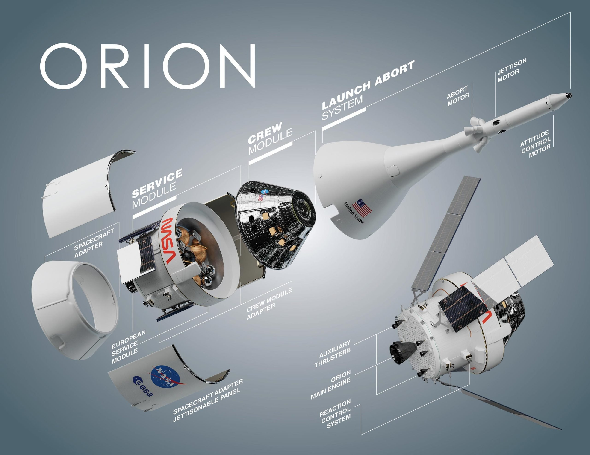

How it helps us
With anything Nasa does it directly benedfites us back on earth. For instance the roads we drive on and battery powered tools we use were designed by Nasa and now we use battery powered tools all the time. And we drive on the road ways the have came up with, even down to water filter systems we use to filter our water. The Artemis program will produce new technology that will help progress our daily lives here on Earth.
The Lunar Gateway
The lunar gate is a new peiece of technology meant help lunar landings. Nasa's lunar gateway will have a life support system aboard along with a sleeping uaters and labs for science. It will also have dockings systems This will make it so the Orion spacecraft can doc along with lunar landers and cargo ships. It will also have a advanced AI robotic arm to assit in spacewalks.
Facts

